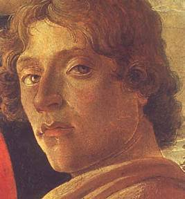
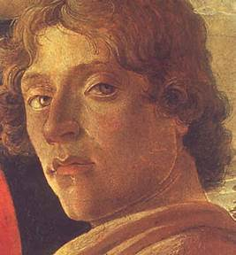
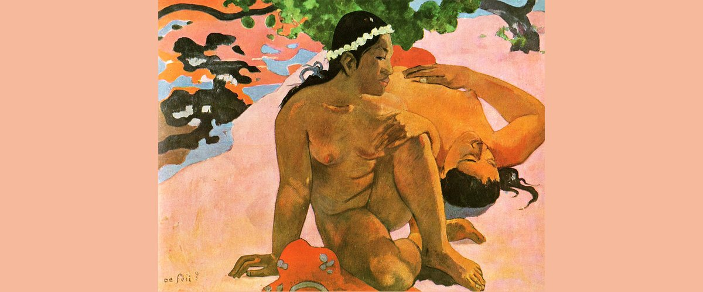
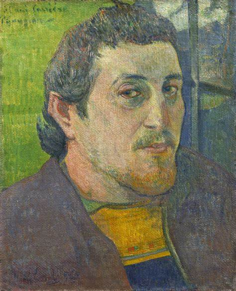
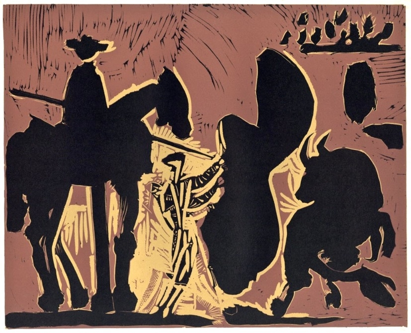
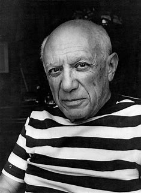

tempera on canvas, 1485 - 1485


The Dance around the May Pole
oil on panel, 1634
oil on panel, 1634


Aha Oe Feii? / Are You Jealous?
oil on canvas, 1892
oil on canvas, 1892


Before the Goading of the Bull
linogravures linocut, 1962
linogravures linocut, 1962